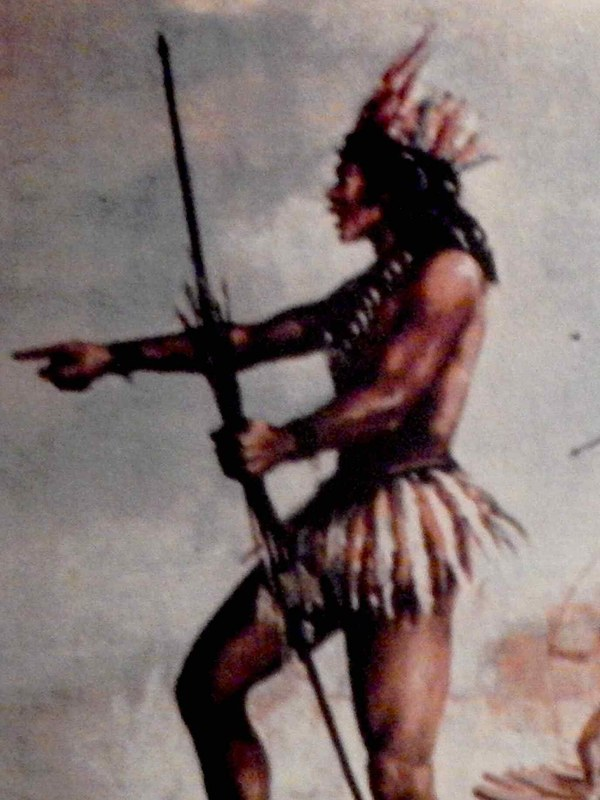

THE CONFEDERATION'S WOUND
Thirty tribes, one wound — his technique is the confederation made metaphysical: no one bleeds alone, and no one is ever compelled to share.

THE CONFEDERATION'S WOUND
Thirty tribes, one wound — his technique is the confederation made metaphysical: no one bleeds alone, and no one is ever compelled to share.
Feature map
Level-by-level features, as the figure refined them.
No One Bleeds Alone
Reaction · 2 CE.
Tier IV · Tank · Suggested CE ability: CON · Primary verb: Share. Damage dealt to one is carried by the willing many. Nothing is reduced, nothing denied — the wound is divided, and the division is always chosen. The Confederation. Willing creatures within 60 ft of Ajuricaba are the Confederation. Membership is declared freely and may be withdrawn freely at any time (no action). No effect in this campaign can compel membership — Heaven enforces the decline.
When a willing creature in the Confederation takes damage, Ajuricaba divides the damage among any number of willing creatures in the aura (including himself), decided after seeing the damage roll. No creature may be assigned more than half the total. A creature may decline its share as a free choice — decliners cannot be assigned shares for 1 minute. A declined share is reassigned among the remaining willing creatures; if none remain willing, the original target bears it. The damage is never reduced. It is shared.
Chain-Breaker
Bonus action · 2 CE.
Spectral chains — the chains that held him, wielded now — lash out at a creature within 30 ft: melee spell attack, dealing 2d8 + CON modifier force damage on a hit, and the target's speed becomes 0 until the start of Ajuricaba's next turn. The chains hold.
Take the Blow
Reaction · 3 CE · once per round.
When a willing creature in the Confederation would take damage, Ajuricaba takes all of it instead. No division, no decline — his choice, his back. (The chief bleeds first. That was always the price of the line.)
The Line Remembers
passive
When Ajuricaba takes damage assigned through No One Bleeds Alone or Take the Blow, the river returns what it borrowed: at the start of his next turn he regains HP equal to his CON modifier (once per round). The damage itself is never reduced — it is shared, and then weathered. The river has carried worse.
Confederation Wall
Action · 5 CE · 1 minute.
The aura extends to 120 ft. While it lasts: shares assigned through No One Bleeds Alone may not exceed one-third of the total per creature; and once per round, when a Confederation member takes damage from an attack, Ajuricaba may have the attacker take force damage equal to his CON modifier + proficiency bonus as the wall answers. No action required.
The River Takes the Blow
Action · 8 CE · once per long rest.
For 1 minute, whenever a willing creature in the Confederation takes damage, Ajuricaba may reassign any portion of it to himself after seeing the roll — no reaction required. Damage he takes this way is never reduced; at the start of his next turn he regains HP equal to his CON modifier (once per round). The river carries what the line cannot.
Maximum, Domain, or equivalent.
Capstone material.
Maximum: THE MEETING OF THE WATERS
For 1 minute, all damage dealt to willing creatures within 120 ft is pooled and split evenly among all willing creatures in the aura (minimum 1 per creature; if the pooled total is less than the number of willing creatures, divide it one point at a time among them until exhausted). Ajuricaba may voluntarily take any creature's share onto himself, in addition to his own. Once per creature per Maximum, pooled damage cannot reduce a creature below 1 HP — the black water and the brown water run side by side, and neither drowns the other.
THE CONFEDERATION ASSEMBLED
The muster of the thirty peoples, standing in one line. Sure-hit (allies): redistribution through No One Bleeds Alone costs 0 CE once per round (still requiring his reaction), shares may not exceed one-third per creature, and Take the Blow costs 1 CE. Sure-hit (enemies): hostile creatures cannot move willing creatures out of the Domain against their will, and damage dealt to Confederation members inside is redistributed, never reduced — half of each attack's damage (round down) is divided among the other willing Confederation members in the Domain, no share exceeding one-third of the redistributed amount. Any portion that cannot be assigned — because members decline or the one-third cap leaves a remainder — is borne by the original target. The river carries the blow before it lands; it does not lighten it. (Members may still decline freely; the Domain honors every decline.)
- Clash points
- 800
- Burnout
- 5 rounds
- Duration
- 2 minutes
- Radius
- 60-ft enclosed Domain
- Activation ✦
- full-turn action
- CE cost ✦
- 20
✦ Canon: figure Domains are Specific Domains — the stated profile governs, not the player point-unlock table.
HE NEVER SURRENDERED
Once per long rest, when Ajuricaba would be reduced to 0 HP, he is reduced to 1 HP instead, and every willing creature in the Confederation gains temporary HP equal to his CON modifier + proficiency bonus. He is immune to any effect that would compel him to surrender, ask quarter, or lay down arms — frightened and charmed effects that carry such commands fail against him automatically. The vow holds. It always held.
Build-defining options.
This technique grants Innate Technique Feats — hand-authored applications of the figure's art, available in the builder's feat picker when you select this technique.
Edge cases and shared systems.
Campaign canon notes